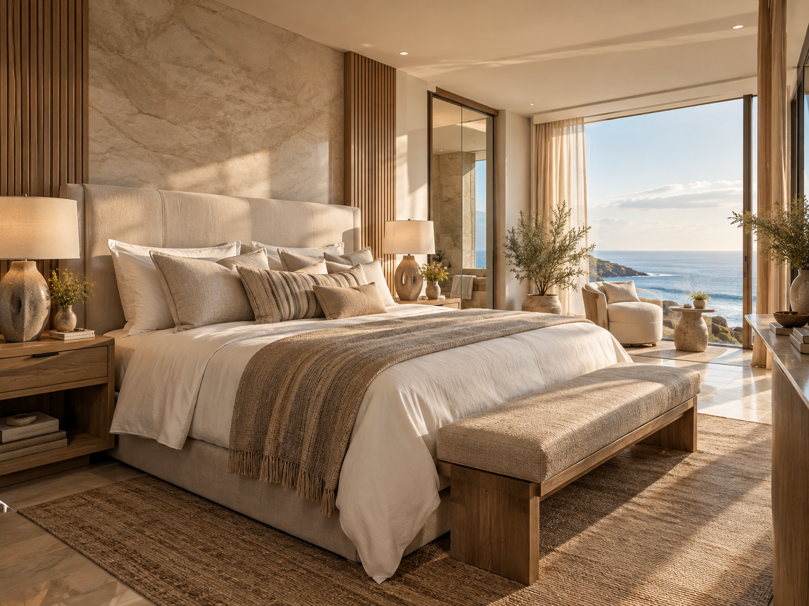
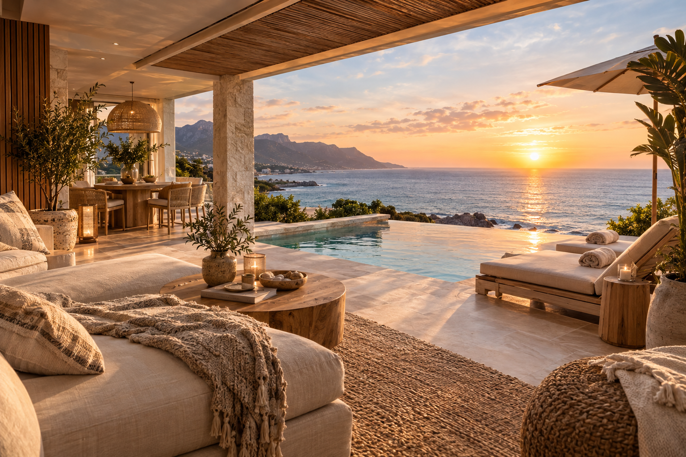
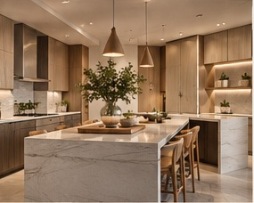
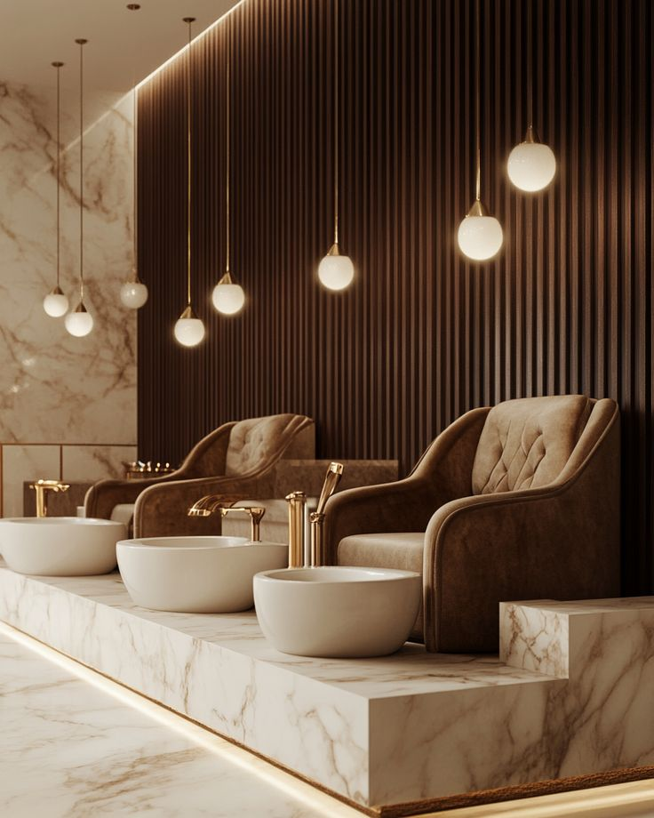
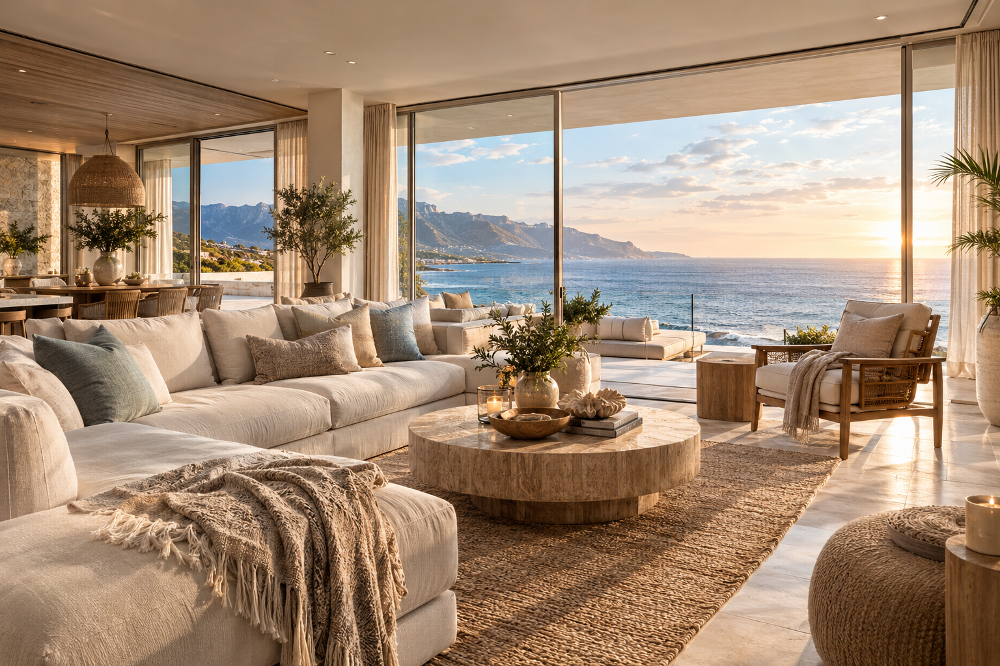
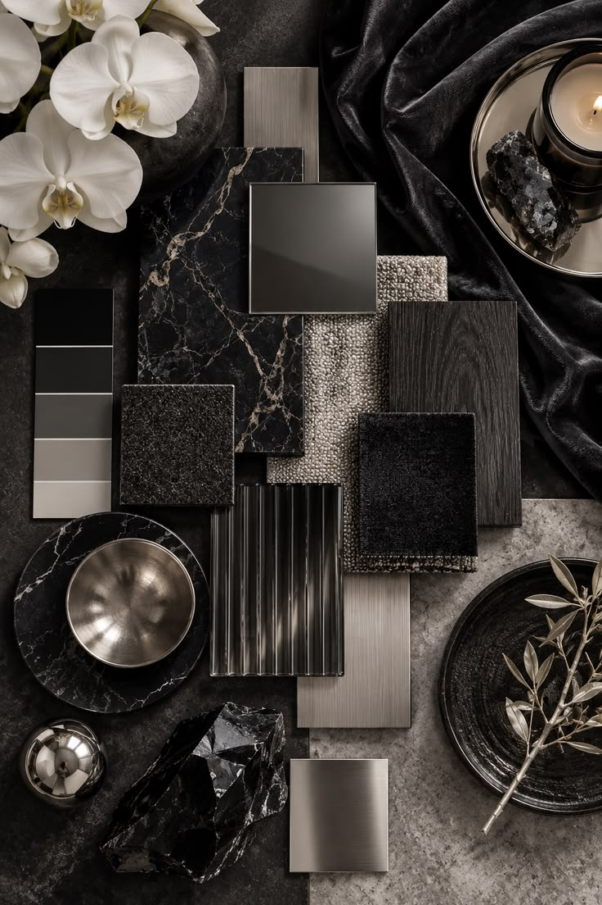

Portfolio
A selection of our work.
Browse ideas for homes, workspaces, feature walls, cladding and outdoor areas. Each project starts with the needs of the space and the people who use it.

P







